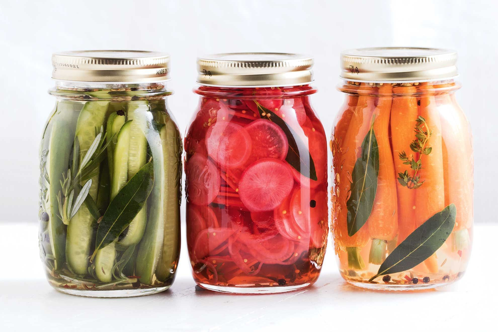

Pickles

Paso a paso
- Recepción M.P.
- Lavado
- Pelado
- Cortado
- Escaldado
- Enfriado
- Preparación y Hervor de líquido de cobertura
- Envasado
- Adición de líquidos de cobertura
- Tapados de Frascos
- Pasteurizado
- Segundo Enfriado
- Control de pH
- Almacenado
Puntos Críticos
- CONTROL DE pH: menor a 4,5
- TIEMPO DE BAÑO MARIA: depende de la capacidad del envase
- TIEMPO DE ESTERILIZADO DE LOS ENVASES
- BPH (Buenas Practicas para el Hogar):
- Higiene Personal
- Evitar Contaminación Cruzada
- Control de Plagas
- Manejo de Desechos
- Almacenamiento Seguro de Productos Químicos
Más Información
- El pH es una medida de acidez de un producto.
- El botulismo es una enfermedad rara pero sería causada por una toxina (veneno) producida por una bacteria, transmitido por alimentos. Esta bacteria no crece en pH ácido (menor a 4,5).